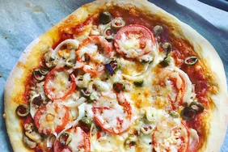

Pizza recipe

Pizza Margarita recipe
Italian Pizza Margarita homemade recipe
Ingrients
- cold tap water: 300 ml,
- fresh yeast: 3 g,
- salt 11 g,
- flour: 450 g
- tomato sause
- mozarella cheese: 100 g
- parmezan cheese: 15g
- olive oil: one spoon
- bazil, oregano
Steps
- Mix water and yeast.
- Add some flour and salt, mix for a minute.
- Add remaining flour and mix for 15 min, then let it rest for 20 min.
- Bake in two steps: add sause and bake in the owen at max heat for 6 min, then add remaining chease and cook 4 min until done.